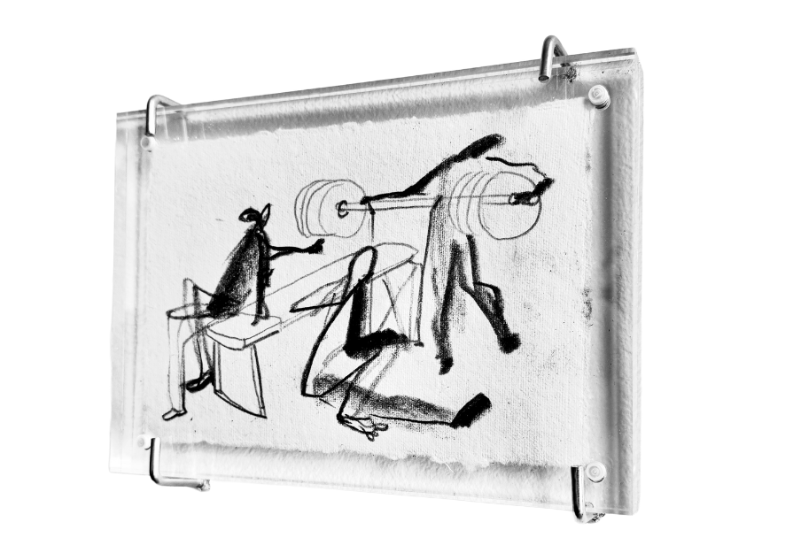

Trespasses by Angelo Dolojan
Trespasses is a series of graphite drawings concerned with proximity and how bodies, histories, and interior lives intersect. The works examine moments when boundaries blur and strangers cross into one another’s emotional terrain.
The title suggests both entry and overreach. To trespass is to cross a threshold without certainty of permission. It is also to risk closeness. The drawings dwell in this unstable space: between invitation and intrusion, tenderness and exposure, connection and aftermath.
Rendered from memory, the images resist documentation. They are partial reconstructions; scenes filtered through time, shaped as much by distance as by recall. Memory becomes the primary material: unstable, selective, and charged. What remains visible is not chronology but atmosphere and the feeling of having briefly occupied a shared interior and then stepped away.
Installed within Epiphany Center for the Arts, a space that once functioned as a church, the exhibition quietly acknowledges the building’s earlier life. Religious spaces have long been places where private histories are spoken aloud and where boundaries between interior and exterior life briefly soften. In this setting, the drawings consider what it means to enter another person’s emotional terrain, and what remains after those moments of closeness pass.
Angelo Dolojan is a Filipino artist based in Chicago. Working primarily in drawing, his practice explores memory, fleeting encounters, and the fragile architectures of intimacy. His work often reconstructs moments from lived experience, translating them into quiet images that sit somewhere between documentation and recollection.